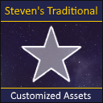
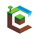
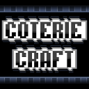

Resource Packs
Hier findet ihr sämtliche meiner Minecraft Resource Packs.
-

Steven's Traditional Addons
Steven's Traditional ist ein Faithful 64x64 Minecraft Resource Pack. Ich verwende das Pack in vielen meiner Minecraft-Videos. Hier findet ihr Addons, welche ich für das Texture Pack gemacht habe.
-

Compliance Addons
Compliance ist ein Faithful 32x32 bzw. 64x64 Resource Pack. Hier findet ihr von mir gemachte Addons für das Compliance Pack.
-

Coterie Craft
Coterie Craft ist ein 16x16 Texture Pack, für welches ich ein paar Texturen gemacht habe.